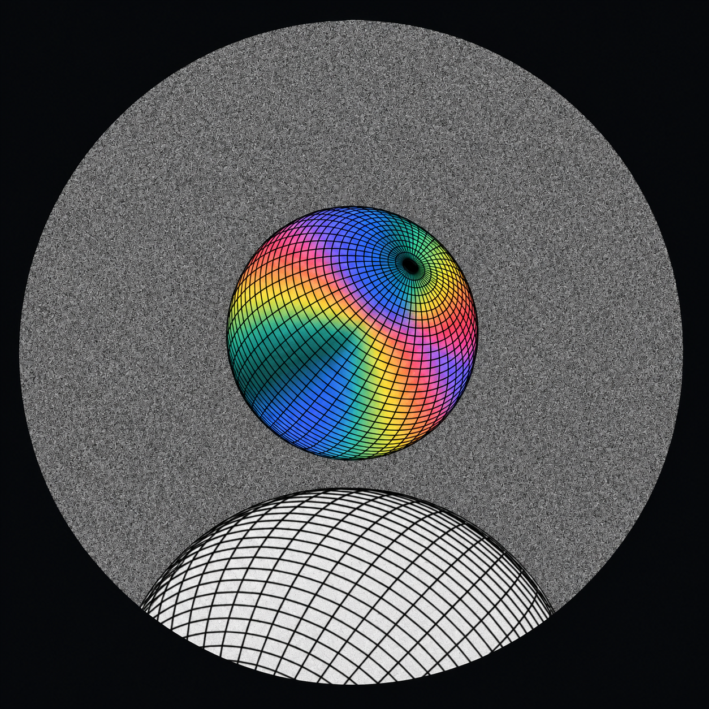
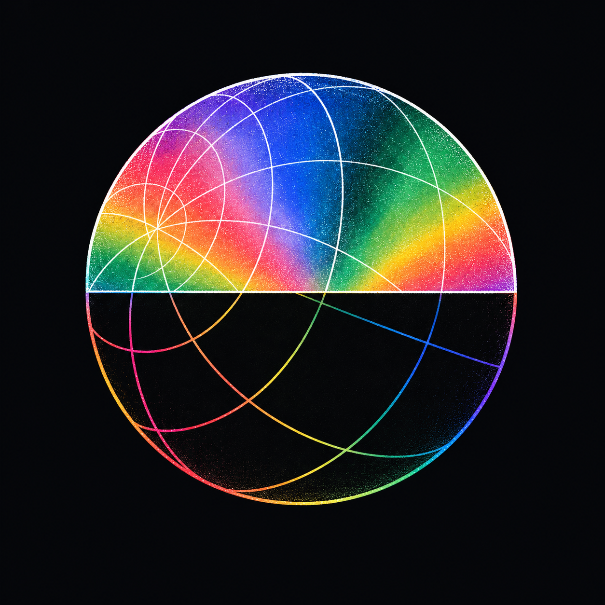

中央彩球＋下方白球；圆窗内是灰噪颗粒，圆窗外保持黑色。偏轴经纬网形成连续流动的几何。
AETHER / SPECTRAL GLOBES / 04
采用 Aether CD 的频谱配色，以球面网格、平面反相与印刷颗粒构成视觉。
本轮按指定构图使用内置 imagegen 生成；保留原始输出。E2 后续发现结构问题，查看共享球面修正版与新构图 ↗。

中央彩球＋下方白球；圆窗内是灰噪颗粒，圆窗外保持黑色。偏轴经纬网形成连续流动的几何。

上半部彩色场＋白色轮廓；下半部黑色场＋彩色轮廓。同一套曲线穿过水平分界，保留平面图示感。